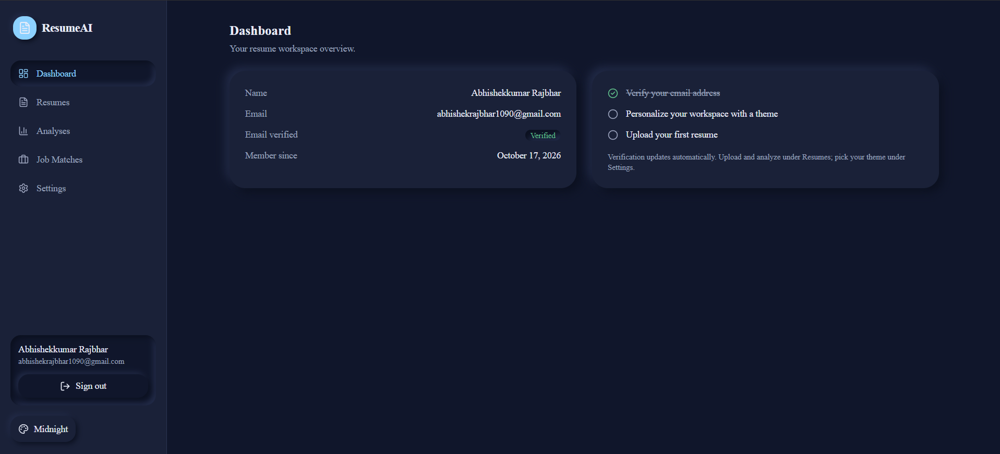
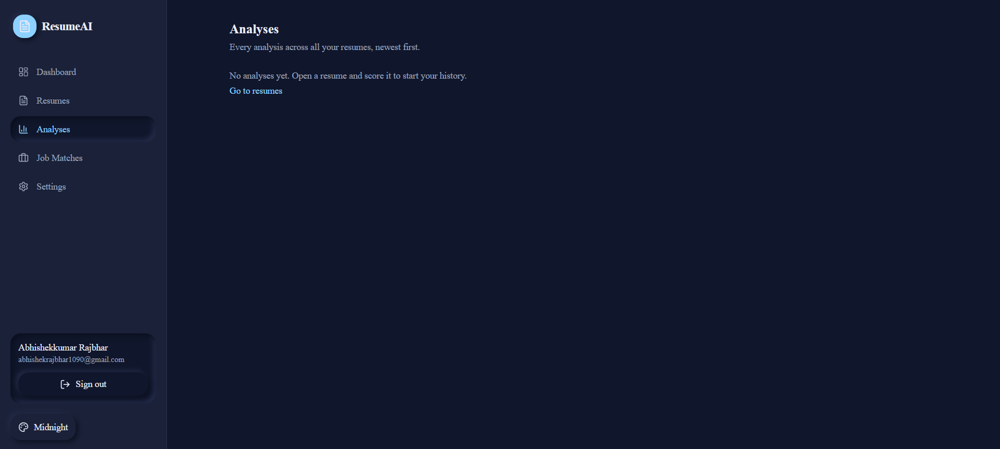
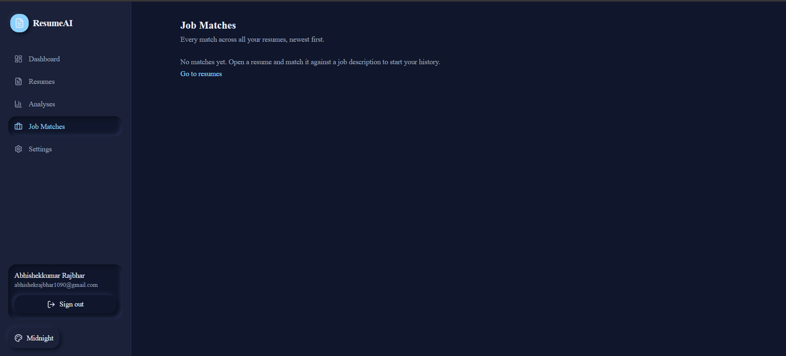

Upload & review
PDF/DOCX with validation and text extraction. Nothing is stored until you approve the extracted data.
ResumeAI takes a resume from raw PDF to polished export: AI-assisted extraction you review before saving, deterministic scoring with stored provenance, job-description matching, four export templates — and honest disclaimers at every step. Scores are estimates, never ATS verdicts.
Every AI output is provenance-backed: deterministic scores are computed separately from LLM text, and every report stores the scoring version that produced it.
PDF/DOCX with validation and text extraction. Nothing is stored until you approve the extracted data.
A deterministic engine, versioned per report. The numbers and the narrative never blur together.
Concrete improvement ideas from a provider behind an abstraction — Gemini by default, mock in tests.
Paste any job description and get skill-gap analysis plus keyword-coverage reporting.
Four professional templates, accent colors, live editing, and one-click polished PDF export.
Every analysis and match report is saved to your account and re-openable at any time.
Six steps from raw document to finished PDF — each one scoped to your account.
A deliberate, boring-in-the-right-places stack.
The browser only talks to Next.js. In production, /api/v1/* is rewritten to FastAPI on Render — same-origin requests, first-party session cookies, no CORS on the critical path.
┌───────────────────────────────┐
│ Browser (you) │
└───────────────┬───────────────┘
│
┌───────────────▼───────────────┐
│ Next.js 14 · Vercel │
│ App Router · TS · Tailwind │
└───────────────┬───────────────┘
│ HTTPS · session cookie + CSRF header
┌───────────────▼───────────────┐
│ FastAPI · Render (Docker) │
│ Pydantic v2 · SQLAlchemy │
│ ┌─────────────────────────┐ │
│ │ AI provider abstraction │ │
│ │ Gemini / mock (tests) │ │
│ └─────────────────────────┘ │
└──────┬──────────────────┬─────┘
│ │
┌────────────▼─────────┐ ┌─────▼────────────────┐
│ Neon · PostgreSQL │ │ Resend · email │
│ Alembic migrations │ │ verify · reset │
└──────────────────────┘ └──────────────────────┘
Captured from the live deployment in the midnight theme.



The auth system was built to a written threat model, not vibes.
Random 256-bit cookie token; only its SHA-256 hash is stored. No JWTs. Revocable individually or globally.
Double-submit token bound to the session row, echoed on every mutating request.
Argon2id with OWASP-aligned defaults, no composition rules (NIST 800-63B), transparent legacy upgrades.
Sliding window per IP with Retry-After surfaced to the UI, plus anti-enumeration on every auth path.
Thirteen phases, 0 through 12, each closed out with green gates before the next began. Full detail in the README.